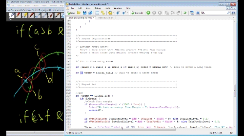

Market theories refer to the way the markets work. This entails understanding market inefficiencies, market participants, relationships between assets/products/news/factors and price behaviour.
Trading ideas stem from market inefficiencies. You will need to know how to evaluate market inefficiencies that give you a trading edge versus those that don’t. You also need to learn how to take advantage of these market inefficiencies when they occur.
This is akin to understanding the battlefield. Knowing what your opponent is doing in this particular battle considering the relevant factors (both your armies, terrain, goals and characteristics of each general).
Design of an effective portfolio of trading strategies. This entails understanding how automated trading systems work individually and together.
On an individual level, an algorithmic trading strategy consists of 3 core components: 1) Entries, 2) Exits and 3) Position sizing. You’ll need to design these 3 components in relation to the market inefficiency you are capturing (and no, this is not a straightforward process).
On a portfolio level (aka multiple strategies running together), you’ll need to know how to manage a group of algorithmic trading strategies at the same time. Strategies can be complementary or conflicting – this may lead to unplanned increases in risk exposure or unwanted hedging. Capital allocation is important too – do you split capital equally during regular intervals or reward the winners with more capital?
Once we find market inefficiencies, we need to find the best way to exploit them. That will require you to have knowledge of how to design trading robots.
Design involves testing for market inefficiencies (does the market inefficiency exist?) and building effective trading strategies (can I find a way to take advantage of them?). The former entails market (is it correlation or causation – or does it not matter?), statistical and infrastructural analysis. The latter entails idea generation, backtesting (testing expectancy and robustness) and optimisation (maximising performance with minimal curve fitting).
Designing, training and equipping your army to beat a specific opponent.
The method we use to build algorithmic trading strategies.
If you know which products you want to trade, you should find suitable brokers and platforms for these products. You then need to learn the programming languages for those platforms/backtesters.
If you are starting out and do not know what to trade, I recommend Metatrader 4 (FX and CFDs on equity indices, stocks, commodities and fixed income), Quantopian (stocks only) or Quantconnect (stocks and FX). The programming languages used are MQL4, Python and C# respectively.
Skills to forge swords, craft bows, and build catapults.
This entails sourcing and cleaning data to ensure we have accurate data for backtesting and that this data reflects the live trading environment as much as possible.
Garbage in == garbage out. Inaccurate data leads to inaccurate test results. We need reasonably clean data for accurate testing. Cleaning data is a trade-off between cost and accuracy. If you want more accurate data, you need to spend more resources cleaning/obtaining it.
Issues that lead to dirty data include missing data, duplicate data, wrong data (bad ticks). Other issues that can generate misleading data include dividends, stock splits, mergers, spin-offs, gaps and futures rollovers etc.
Making sure the intel on the enemy is correct.
